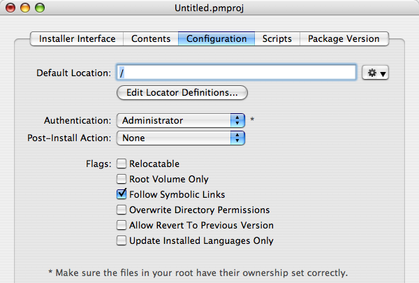

Configuring your Package
Packages have quite a few options which can be configured, naturally enough, in the “Configuration” tab of the PackageMaker user interface. The options have the following meanings:
- Default Location: The location where Installer.app will install the package if the user does not relocate the file, or Locator does not find software to upgrade.
- Authentication: The level of authentication Installer.app will require to complete the install. For most installs, this should be Administrator. For installs that write into system directories, Root should be used. No authentication should only be used when installing into a user's home directory.
- Post-Install Action: What Installer.app will do when the installation completes succesfully. If possible, do not require any Post-Install action.
- Relocatable: If yes, Installer.app will allow the user to change the install location from the Default Location. Locator can still change the install location.
- Root volume only: If yes, Installer.app will only allow installation on the root volume.
- Follow symbolic links: If yes, Installer.app will follow symbolic links during install. If no, Installer.app will clobber symlinks. It is advised that you leave this flag on.
- Overwrite directory permissions: If yes, and your authorization allows it, Installer.app will chmod/chown directories to match those in the root. If your permissions/ownership are incorrect, this can cause all sorts of problems on the user's machine. It is advised that you leave this flag off.
- Allow Revert to Previous Version: If yes, Installer.app will allow downgrades (that is, installing an older version of the package over a newer version).
- Update Installed Languages Only: If yes, Installer.app will not add new languages, it will only update the currently installed languages.
 The “Configuration” tab